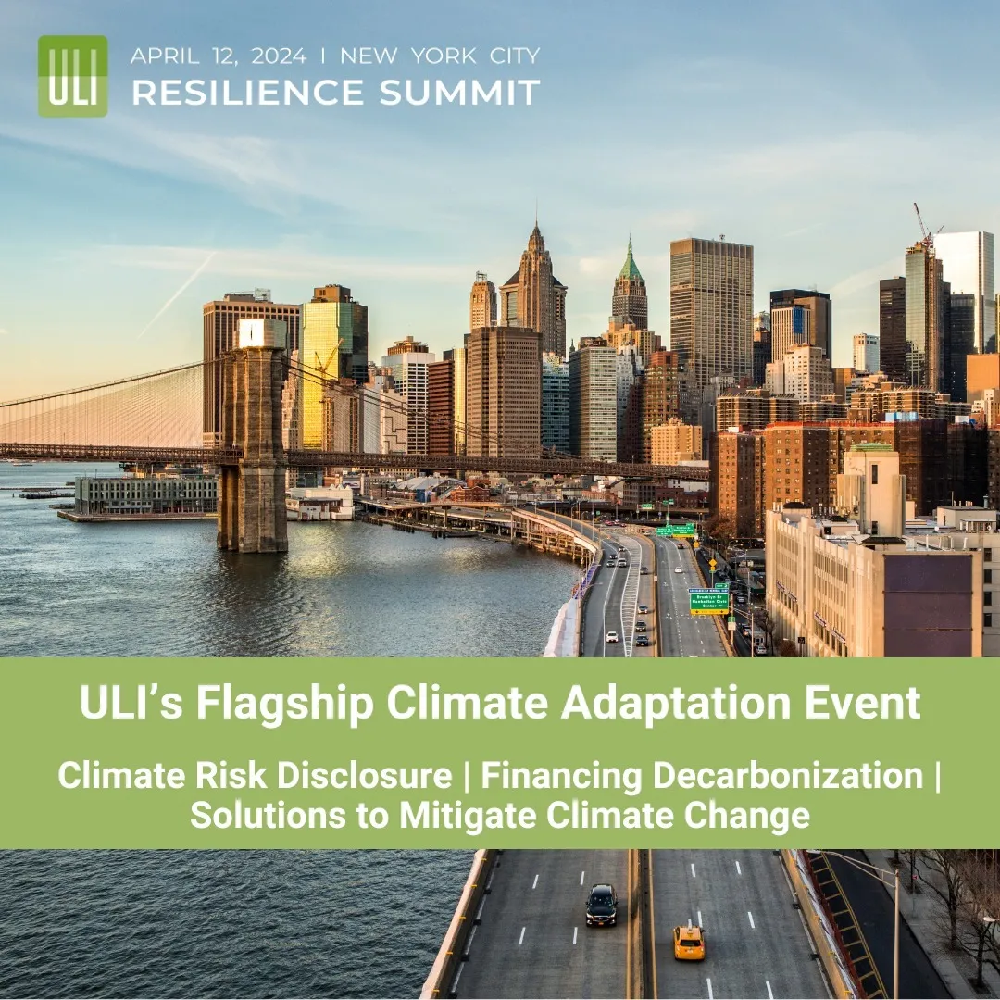
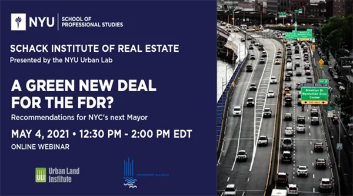

The World Bank - Housing Safe Space Sessions
Briefing to The World Bank's specialists in the Urban, Resilience and Land Unit for the Latin America Region. The focus is on NYU Urban Lab's research and policy recommendations…
Read moreConversations connecting research, policy, and urban development.
Briefing to The World Bank's specialists in the Urban, Resilience and Land Unit for the Latin America Region. The focus is on NYU Urban Lab's research and policy recommendations…
Read more
The Urban Land Institute hosted its 5th Annual Resilience Summit at NYU Kimmel Center in New York City on April 12, 2024.
Read moreUrban Lab Fall 2022 Series: A Green New Deal for the FDR
Read moreInclusive Development Metrics and Frameworks in Real Estate Development
Read morePanel 2: "Financing Smart Infrastructure" will address questions regarding sustainability, green infrastructure, coastal flood protection, resiliency, and environmental justice.
Read moreOn May 6, 2021, the NYU Urban Lab partnered with the ULI New York and the Waterfront Alliance to sponsor a single-day mTAP: A Green New Deal for the FDR. ULI is the oldest network…
Read more
Our webinar speakers were industry experts that addressed questions of the FDR’s future in the context of coastal flood protection, smart highways, and environmental and social…
Read moreNYU SPS Energy, Climate Justice and Sustainability Lab Launch Event
Read more